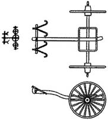

COMENTÁRIO DE GRAMÁTICA
10.1. Unidades de Contagem
Uma classe específica de palavras com funções exclusivamente nominais no chinês antigo é o grupo de unidades de contagem, que inclui duas categorias.
A primeira categoria de unidades de contagem é usada para nomear medidas de volume ou conjuntos de pequenos objetos. Isso inclui, por exemplo, palavras como 卣 yǒu "jarro" — uma medida de líquido (鬯六卣 chàng liù yǒu "seis jarros de vinho"); 朋 péng "feixe" — uma unidade de contagem de conchas de cauri, amplamente usada pelos Yin como ornamentos (貝二朋 bèi èr péng "dois feixes de conchas").
A segunda categoria de unidades de contagem é usada para contar objetos individuais. No chinês antigo arcaico, tais unidades de contagem coincidem com os nomes usados para designar os próprios objetos: 人 rén para contar pessoas (人十人 rén shí rén "dez pessoas"), 羊 yáng para contar ovelhas (羊百羊 yáng bái yáng "cem ovelhas"), etc.
Um numeral com uma unidade de contagem sempre segue um nome. Nos casos em que um numeral atua como um atributo de um nome e, portanto, o precede, unidades de contagem não são usadas.
10.2. Cadeia de Definições
Uma definição de um nome que o precede pode, por sua vez, ter uma definição. É assim que surgem cadeias de definições: 我西鄙田 wǒ xī bǐ tián "campos de nossa periferia ocidental" (cf. 我東鄙 wǒ dōng bǐ "nossa periferia oriental").
10.3. Preposição 迄 qì
Para denotar o ponto final do movimento no espaço ou no tempo, no chinês antigo arcaico, junto com 于 yú, a preposição 迄 qì (às vezes na combinação 迄至 qì zhì) também é usada:
迄至九日辛卯允雨 qì zhì jiǔ rì xīn mǎo yǔn yǔ "No nono dia de Xin Mao, realmente choveu."
10.4. Substantivo Adverbial 昔 xī
Além de 今 jīn, 昔 xī também pertence ao grupo de substantivos adverbiais da língua arcaica. Essas duas palavras estão relacionadas pela oposição binária "perto" versus "longe". Enquanto 今 jīn pode ser traduzido para o português como "agora", "atualmente" ou "no momento presente", 昔 xī significa "antes", "uma vez" ou "no passado".
Consequentemente, em textos, 昔 xī aparece como um objeto, denotando o tempo de uma ação:
昔祖丁不黍 xī zǔ dīng bù shǔ "Anteriormente, o Ancestral Ding não semeava painço."
Esta palavra também pode servir como adjetivo para um nome:
昔丁丑 xī dīng chǒu "último dia de Ding-chow."
10.5. Coloque os predicativos 若茲 ruò zī e 若偁 ruò chēng
Já encontramos um grande número de palavras funcionais que substituem nomes e, portanto, são chamadas de pronomes.
No entanto, no chinês antigo também existem palavras que substituem predicativos. Eles podem ser chamados de predicados de lugar.
Os predicados de lugar da língua arcaica são representados por frases que consistem no predicado 若 ruò "ser semelhante" e pronomes demonstrativos.
O predicado de lugar mais frequentemente usado é 若茲 ruò zī "ser assim":
日若茲晦 rì ruò zī huǐ "O sol ficou tão escuro."
若茲不雨 ruò zī bù yǔ "Não chove há tanto tempo."
Este predicado de lugar também pode funcionar como um predicado.
Aparentemente, a frase pareada para este predicado de lugar é 若偁 ruò chēng.
10.6. Frases Complexas em Línguas Arcaicas
Até agora, lidamos exclusivamente com frases simples. Isso ocorre porque as relações entre os componentes de frases complexas em línguas arcaicas geralmente não são expressas formalmente. A natureza da conexão entre frases simples em uma frase complexa pode ser determinada pelo significado:
王占曰丁丑有設, 不吉, 其唯甲有設, 吉, 其唯辛有設, 亦不吉 wáng zhān yuē dīng chǒu yǒu shè, bù jí, qí wéi jiǎ yǒu shè, jí, qí wéi xīn yǒu shè, yì bù jí "O governante leu a resposta no osso da adivinhação: "No dia do ding-chou haverá um presságio, é lamentável; [se] o presságio for no dia de jia, [então] é uma sorte; [Se] em um dia xin, [então] também é para o infortúnio.”
Aparentemente, a conexão entre as frases na última parte do texto da lição 10 deve ser considerada no mesmo contexto:
王占曰不嘉, 其嘉, 不吉 wáng zhān yuē bù jiā, qí jiā, bù jí “O governante leu a resposta: ‘Isso não se realizará. [E se] se concretizar, então é para o infortúnio’.”
Talvez o único indicador gramatical da conexão entre frases em uma frase complexa seja a palavra funcional 乃 nǎi (迺 nǎi) na língua arcaica. Ela indica uma relação temporal ou causal em uma sequência de eventos:
若茲乃死 ruò zī, nǎi sǐ "Assim será, e [ela] morrerá."
Se 乃 nǎi estiver no início de uma declaração, indica que outra oração, já conhecida do contexto, foi omitida:
乃若茲有祟若偁 nǎi ruò zī yǒu suì ruò chēng "E nisto também haverá dano, como em isso."
COMENTÁRIO LEXICAL
10.A. Carruagens Yin
Até os séculos V e IV a.C., os cavalos eram usados pelos antigos chineses exclusivamente como animais de tração, puxando carros de guerra. Os carros de guerra eram a principal força de ataque da época; não é coincidência que, em tempos posteriores, o poder de um estado fosse medido pelo número de carros de guerra. Os Yin também usavam carros de guerra amplamente para caça.
Os principais componentes estruturais de uma carruagem eram o corpo, o eixo, duas rodas, uma barra de tração e uma barra transversal com jugos em forma de estilingue, que serviam como grampos. A parte mais vulnerável da carruagem era a barra de tração, que se quebrava facilmente.



À esquerda, uma carruagem Yin encontrada durante escavações;
No centro, sua reconstrução;
à direita, a inscrição antiga do caractere 車 chē.